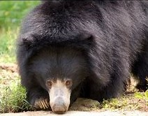
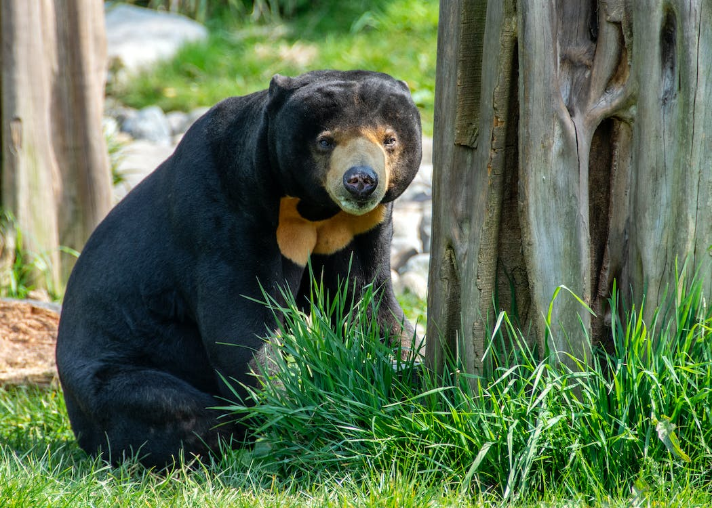
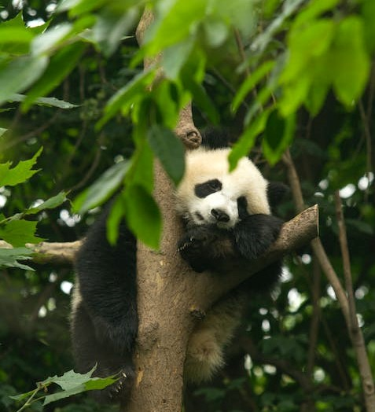
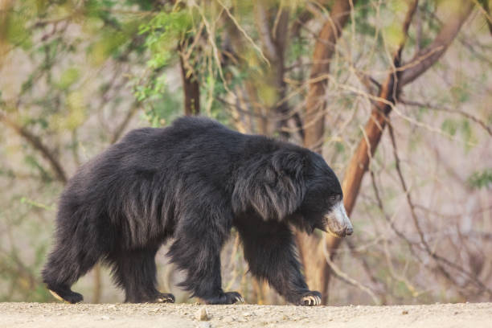
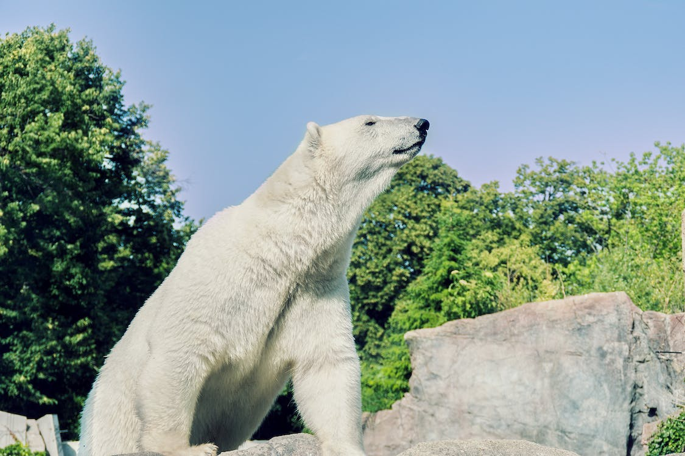

The Specialists
The bears that have honed their genetic make up to do one thing
exceptionally well. They are the bears who break the mold and try
something, for better or worse, that nor many mammals try to do.


Region: Southeast Asia
Average Length: 135cm
Average Weight: 45kg
Viability: Sun bears rely on termites, ants, and other small insects for food.
Their long longs and flexible snouts make eating these bugs incredibly easy, they also
have short but razor-sharp claws that are excellent at getting into their prey colonies.
They also have the largest canines of all bears, as they are not carnivorous they are mostly
useless and only function as tools. Sun Bears are the smallest of all the bears by a pretty
large margin and fall prey easily to the more dangerous predators of the South East Asian region.
They do have a cuteness factor that can not be ignored, howver Sun Bears tend to avoid humans,
therefore not fully capitalizing on their potential charisma
Overall Ranking 4/10
While being a tiny bear is a novel, it makes them rather weak, and struggle to find a place in their environment.

Region: Southwest China
Average Length: 150cm
Average Weight: 113kg
Viability: Pandas are overly specialized relying solely on bamboo for their only source of food, this
limits where they can live pretty heavily, as well as limits their energy as bamboo is not the most nutritious
of foods The strict diet also makes hibernation impossible requiring pandas to be active in summer and winter.
Their famous black and white color scheme makes them adorable but provides no benefit to their lifestyle, instead
are a hindrance making them unable to use stealth whatsoever. Overall pandas are a fairly useless animal regarding
viability, however, they do have one thing going for them, they have very high charisma, making humans love them.
Rank: 2/10 or 10/10
The worst bear they struggle to surivve on there own and picked a horrible food,
However with the aid of humans, they are an easy perfect bear, due to their cuteness humans will stop at nothing to keep them alive.

Region: India, Sri Lanka, and Southwest Nepal
Average Length: 165cm
Average Weight: 100kg
Viability: Sloth Bears rely exclusively on insects for sustenance, they have specialized hook-like
claws that allow them to climb, or break trees and dig with ease, allowing for easy access to wasps and termites,
their main food source. Despite being a bear, sloth bears are prey to the more aggressive predators of their regions,
making their life rather difficult. Because of their climate, they also don’t get to enter hibernation and thus have
to constantly be striving to survive
Rank: 5/10
Sloth bears, despite being hyper specialized to eat bugs are average at best at it and while
not bad at anything they are not remarkable at anything either

Region: Arctic Circle, Northern Russia and Canada
Average Length: 240cm
Average Weight: 525kg
Viability: Polar bears are on average the strongest of all the bears, with
incredible physical strength in all of their legs and a devastatingly strong bite.
Their size and aggression make them an imposing force and would dominate in most other biomes,
however being locked into the arctic puts their immense strength to little use as their most common prey,
seals, is one the few creatures able to survive a frontal assault, and are mobile enough in
the water that the polar bear is more reliant on stealth than any other bear, to successfully
capture a meal. Polar bears also do not hibernate and on the contrary use the colder winter months
to more successfully hunt as seals become more lethargic in the winter.
Overall Ranking 7/10
Being an arctic bear comes with too many drawbacks for them to live up to their potential.
if polar bears moved a little to the south they would become power houses in the bear family,
but for now sit just outside the upper echelon.